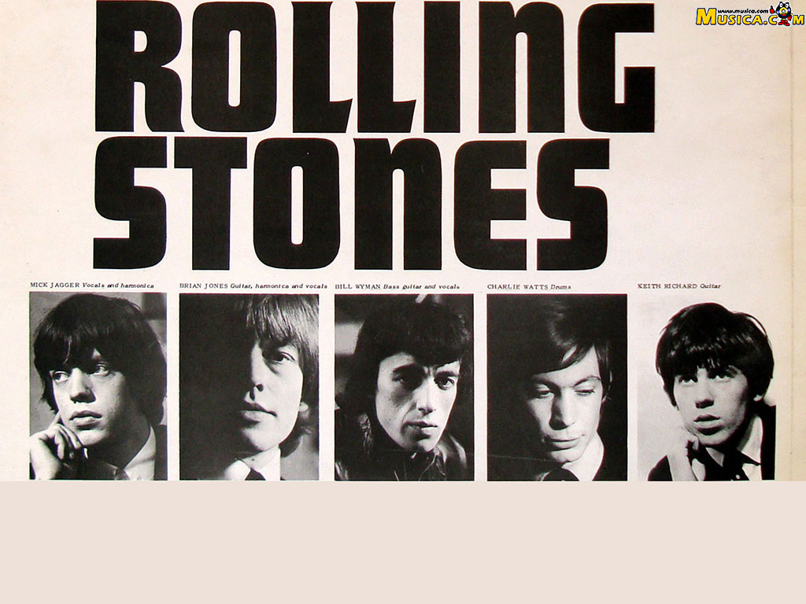

The Rolling Stones es una banda británica de rock originaria de Londres. La banda se fundó en abril de 19622 por Brian Jones, Mick Jagger, Keith Richards, Bill Wyman, Ian Stewart y Charlie Watts.2 Brian Jones fue despedido en junio de 1969, falleciendo tres semanas después, siendo reemplazado por el guitarrista Mick Taylor, que dejaría el grupo en 1975 y sería a su vez reemplazado por Ron Wood. Con el retiro de Bill Wyman en 1993 se incluyó al bajista Darryl Jones que, aunque toca con la banda desde la grabación del álbum Voodoo Lounge en 1994, no es un miembro oficial.
Son considerados una de las más grandes e influyentes bandas de toda la historia del rock,3 siendo la agrupación que sentó las bases del rock contemporáneo.4 5 6 Contando desde sus inicios con el favor de la crítica, algunos de sus materiales están considerados entre los mejores de todos los tiempos;7 8 9 10 entre ellos destacan Beggars Banquet (1968), Let It Bleed (1969), Sticky Fingers (1971) y quizá su mejor obra, Exile on Main St. (1972).nota 1 En 1989 fueron incluidos en el Salón de la Fama del Rock and Roll, y en 2004 la revista estadounidense Rolling Stone los colocó en el puesto No. 4 en su lista de Los 50 Mejores Artistas de todos los Tiempos.11
Ningún grupo de rock hasta la fecha ha sostenido tan duradera y todavía mundialmente reconocida trayectoria como The Rolling Stones; con Jagger, Richards y Watts como miembros fundadores en activo, continúan siendo la banda más longeva de la historia del rock.6 Sus primeras producciones incluían versiones y temas de blues, rock and roll y R&B norteamericano. No obstante, en el transcurso de su trayectoria añadieron toques estilísticos de otros géneros para adaptarse a cada época, recibiendo influencias desde la música psicodélica, el country, el punk, la música disco, el reggae o la música electrónica.
Pese a encabezar junto a The Beatles (con los que siempre rivalizaron en popularidad)12 la «invasión británica» en los primeros años de la década de 1960,nota 2 13 no fue sino hasta el lanzamiento de «(I Can't Get No) Satisfaction» en 1965 cuando alcanzaron el estrellato internacional y se establecieron como una de las bandas más populares en la escena musical.14 A la fecha, la banda ha editado veinticinco álbumes de estudio15 y colocado treinta y dos sencillos dentro de los diez más populares de Reino Unido y los Estados Unidos.16 Las ventas totales de The Rolling Stones se estiman entre 20017 y 250 millones de discos,18 19 convirtiéndolos en unos de los artistas más exitosos de todos los tiempos.
{{ currentTime | date:'mm:ss':'+0000' }}
{{ timeLeft | date:'mm:ss':'+0000' }}
{{ totalTime | date:'mm:ss':'+0000' }}